{kind=link}
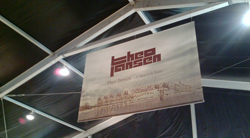
よーやくテオ・ヤンセン展に行ってきましたー。 日比谷。 お正月に行ったときの閑散っぷりが信じられないくらい賑やかでしたー。マスコミ効果絶大。{kind=link}
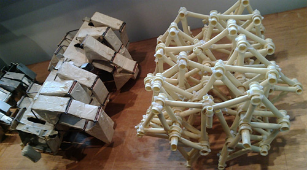
小さな模型から{kind=link}
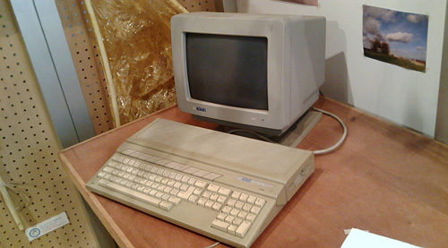
ATARIのPC! ATARI、アタリって、囲碁用語から来ているって知ってましたかー。 私的にはアタリって、PC界のセガサターン的位置にあるのですがー。 つーか、もともとゲーム屋さんなんだよね…なんかの映画で「ニンテンドー」と「ATARI」の比較みたいなのがあったな。{kind=link}
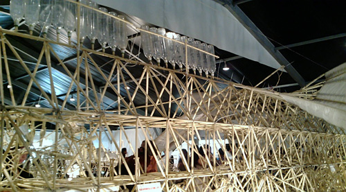
あるよあるよ{kind=link}
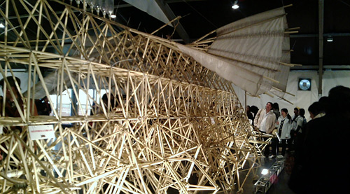
結構雑な作りです。 なんかねー。夏休みの工作っぽいんですけどねー。{kind=link}
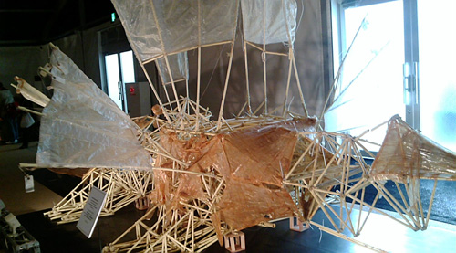
こんなかんじの、作った記憶がありませんかー{kind=link}
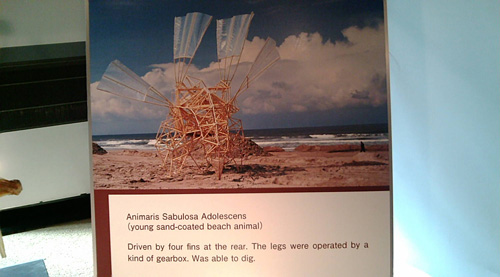
ああ、オランダの空。{kind=link}
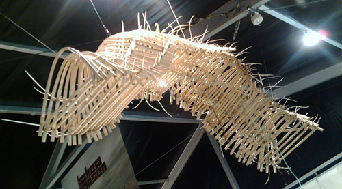
< かわいい。 だんごむしっぽい。{kind=link}
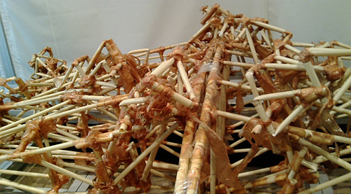
初期のコ（会場のスタッフたちは、作品を説明するときに「このコたち」とゆーふーに生き物として説明してた）{kind=link}
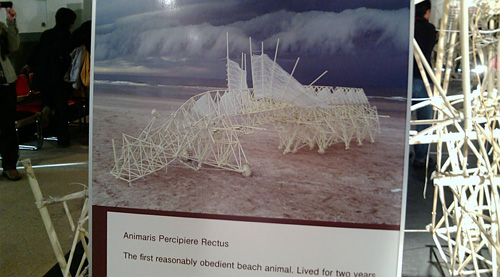
あああ、オランダの空。 あ、この展覧会では撮影OKなんです。珍しいよねー。でもそれがイイと思うよー。{kind=link}
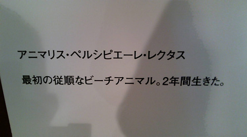
生きたんですよ。{kind=link}
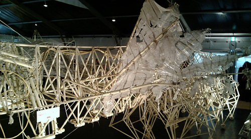
羽がぼろぼろになっちゃったんです。{kind=link}
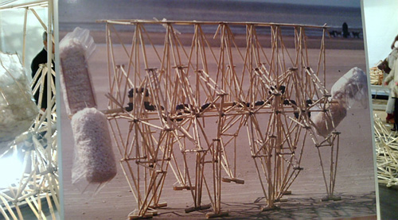
このコは{kind=link}
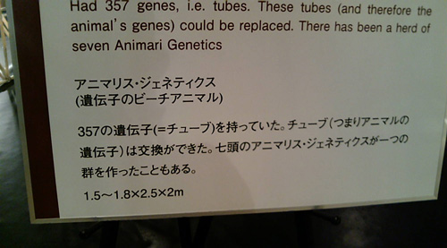
群れをつくるんですなー{kind=link}
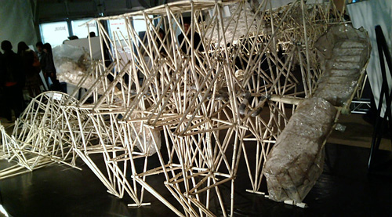
このコです。{kind=link}
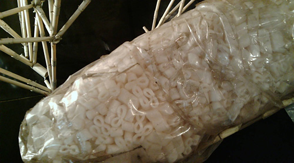
なにで出来ているのかなー。 ケーヨーD2で売ってる？{kind=link}
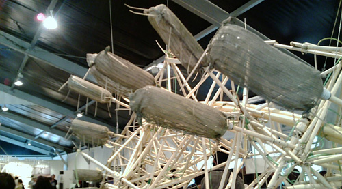
風を貯蓄するペットボトル。破裂防止にネット。{kind=link}
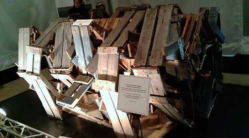
素材が違うコもいる。 骨太なんだな。{kind=link}
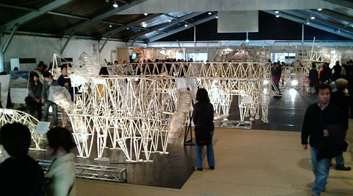
会場全景。 撮影できたり、触れたりとケッコー自由。{kind=link}
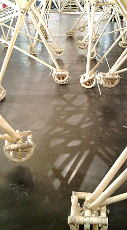
足もｌと。 関節がクイックイってなるの。{kind=link}
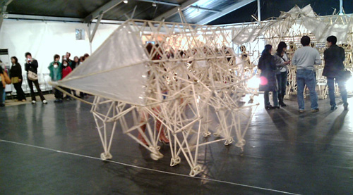
このコは体験で押せるのだけど、大行列。 ちょっと動画で撮ってみた。 だいぶ足もとが疲れていてるっぽかった。 バンテリンが必要だよ！{kind=link}
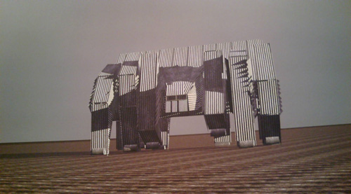
かっこいいー{kind=link}
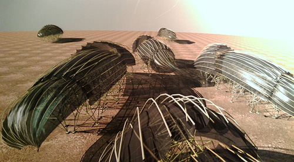
きれいだー！ 何年か先、繁殖をしてオランダの浜辺をうじゃうじゃ。 そんなことをテオは想像し、生きることの手助けをしている。{kind=link}
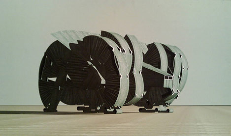
こーゆー重量級のコがオランダの浜辺を歩く姿を想像するだけでワクワクするなー。 風がとまれば立ち止まり、風が強くなほど生き生きとして。{kind=link}
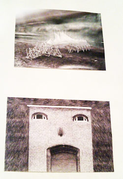
キュートなスケッチ{kind=link}
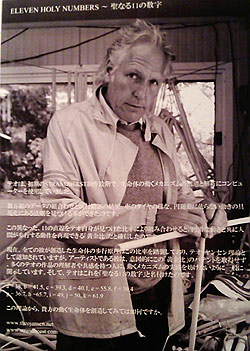
この方が、テオ・ヤンセン{kind=link}
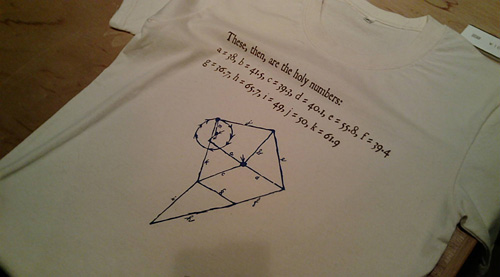
生命の数式。{kind=link}
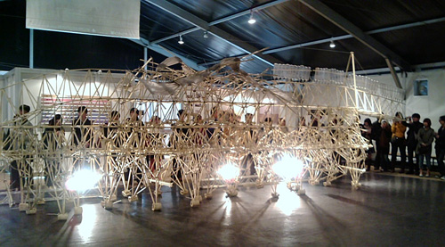
デモンストレーションで動いてくれるコ デモンストションの説明を聞かないと、どーして動くのかとか、どーやって動くのかなとか、このペットボトルはなんなのかわからなかったよー。 荒い動画ですがー。どぞ。動き始めるのは3:13ごろ。{kind=link}
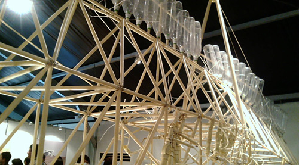
風を貯めておくペットボトル。{kind=link}
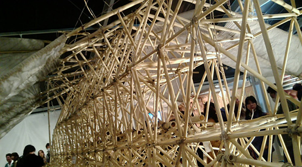
風をうけてはばたく羽。そのうち飛べるコもできるかもなー{kind=link}
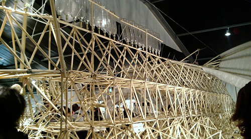
雑だけど、繊細。{kind=link}
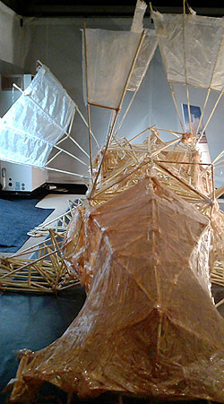
すみっこにいたエビっぽいコ 今後どんなコが生み出されるのかたのしみ。